Data Analyses
analyses.RmdPackages used for analyses, grouped by application:
# general data wrangling
library(tidyr)
library(dplyr)
library(lubridate)
library(broom)
# visualization
library(ggplot2)
library(sf)
library(ggspatial)
theme_set(theme_minimal())
# linear models
library(splines)
# ElasticNet
library(glmnet)
# random and mixed-effects linear models
library(nlme)
# clustering
library(dbscan)
library(mclust)
# dynamic time warping
library(dtw)
# data and util functions
library(asds2024.nils.practical)
# for reproducible results
set.seed(123)Introduction
The final module of the Certificate of Advanced Studies in Advanced Statistical Data Science (CAS ASDS) is a practical project. The topic of the project can be freely chosen by the students, e.g. using data from their work environment or from elsewhere.
The data I chose for my final project is data collected from road bike trips during the years 2018 to 2023. Data was collected using a GPS-enabled bike computer, with complementary sensors for heart rate, cadence, and speed data. In total, the preprocessed data comprises approximately 160000 data points, collected during 157 trips. The actual number of trips during those seasons was higher, however, due to a data corruption in the bike computer’s memory, an unknown number of trip recordings was lost. The following diagram shows the number of tracks for each year in the data set, suggesting that a data block (or data blocks) containing records for 2022 and 2023 was lost.
tracks |>
group_by(year = year(date)) |>
ggplot(aes(x = year)) +
geom_bar() +
labs(x = "Year", y = "Number of Tracks")Available trip data by year
The following image shows the geographic component of the available data on a map, with the tracks in red. Routes driven more frequently appear more saturated, rarely-driven routes appear lighter (e.g. the route to lake Thun only appears once in the data set).
be_fr <- swiss_cantons |>
filter(KTNR %in% c(2,10)) # 2 = BE, 10 = FR
be_fr_lakes <- swiss_lakes |>
filter(grepl("Biel|Brienz|Gruyère|Murten|Neuchâtel|Thun", GMDNAME)) # only show lakes named after these towns
track_linestrings <- track_details |>
filter(!is.na(latitude) & !is.na(longitude)) |>
st_as_sf(coords = c("longitude", "latitude"), crs = "WGS84") |> # EPSG 4326 = WGS-84
st_transform(crs = 2056) |> # EPSG 2056 = CH-1903+/LV95
to_linestrings()
track_linestrings |>
ggplot() +
geom_sf(data = be_fr, fill = "#f0f0f0", alpha = 0.5) +
geom_sf(data = be_fr_lakes, fill = "#0080ff", alpha = 0.25) +
geom_sf(color = "red", linewidth = 0.25, alpha = 0.2) +
annotation_scale(
location = "br",
height = unit(0.1, "cm"),
width_hint = 0.2) +
annotation_north_arrow(
location = "tr",
width = unit(1, "cm"),
height = unit(1, "cm"),
pad_x = unit(0.5, "cm"),
pad_y = unit(0.5, "cm"),
style = north_arrow_fancy_orienteering,
which_north = "true")Geographic track data (in red) on a map of cantons Berne and Fribourg
Since the data was not collected for the purpose of this project, i.e. it is not data from a controlled experiment, it is not as well-formed as would be desirable for an ideal analysis. Instead, the project is an exploratory analysis of available data.
Analyses
The initial raw data has been pre-processed for inclusion in the
package (see vignette("data")), however, first cursory
analyses in an interactive session still showed some unexpected results.
Some more cleaning was therefore done first.
Data Cleaning
Despite the initial data cleanup, there is still invalid data for track 157, which seems to have been caused by some sort of GPS hiccup:
track_details |>
filter(date == tracks[157,]$date) |>
ggplot(aes(x = training_time_absolute_s / 100, y = distance_absolute_m / 1000)) +
geom_line() +
labs(x = "Training Time (s)", y = "Distance (km)") +
ggtitle("Track 157: Distance Over Time")
This seems easy enough to fix, though, since it appears that only the
distance_absolute_m values for that track seem to have a
sudden jump. Knowing the total length of that track (slightly more than
40 km), and seeing that there seems to be only one corrupted data point
(subsequent points seem to continue normally), the fix is simply to
subtract the jump from all points with a distance > 90 km. Assuming
the points between which the jump occurs are
and
,
the height of the jump is assumed to be
(where, for a given point,
means distance_absolute_m, and
means distance_m). In other words, the true difference in
distance_absolute_m between
and
is assumed to be the distance_m value of
(i.e. the distance travelled during that segment). Any excess difference
is assumed to be erroneous, and is subtracted from
and all subsequent points.
corrected_track_details <- track_details |>
mutate(
correction = distance_absolute_m - lag(distance_absolute_m, default = 0) - distance_m,
needs_correction = (distance_absolute_m > 90000) & (date == tracks[157,]$date),
corrected_distance_absolute_m = ifelse(needs_correction, distance_absolute_m - max(correction), distance_absolute_m))
corrected_tracks <- corrected_track_details |>
mutate(
distance_absolute_m = ifelse(needs_correction, corrected_distance_absolute_m, distance_absolute_m)
) |>
summarize_tracks()The resulting distance plot then appears correct:
corrected_track_details |>
filter(date == tracks[157,]$date) |>
ggplot(aes(x = training_time_absolute_s / 100, y = corrected_distance_absolute_m / 1000)) +
geom_line() +
labs(x = "Training Time (s)", y = "Distance (km)") +
ggtitle("Track 157: Corrected Distance Over Time")
The corrected data is used for all further analyses.
Linear Models
First, let’s try to fit linear models using different predictors, to get an idea which predictors might influence the average track speed.
Temperature Effects
The first idea is to look for a temperature effect, i.e. does temperature influence the average speed? Intuitively, there is an optimum temperature, and lower and higher temperatures should result in lower performance.
fit_temperature <- lm(speed_km_h ~ temperature_c, data = corrected_tracks)
summary(fit_temperature)
#>
#> Call:
#> lm(formula = speed_km_h ~ temperature_c, data = corrected_tracks)
#>
#> Residuals:
#> Min 1Q Median 3Q Max
#> -4.1644 -0.8346 0.0939 0.8662 2.8922
#>
#> Coefficients:
#> Estimate Std. Error t value Pr(>|t|)
#> (Intercept) 28.013494 0.573848 48.817 <2e-16 ***
#> temperature_c -0.006994 0.027551 -0.254 0.8
#> ---
#> Signif. codes: 0 '***' 0.001 '**' 0.01 '*' 0.05 '.' 0.1 ' ' 1
#>
#> Residual standard error: 1.296 on 155 degrees of freedom
#> Multiple R-squared: 0.0004156, Adjusted R-squared: -0.006033
#> F-statistic: 0.06444 on 1 and 155 DF, p-value: 0.7999As can be seen from the model, temperature does not have a statistically significant influence (the p-Value is 0.8, i.e. nowhere near the 0.05 that would suggest significance). However, the estimated effect is very small, so there might be some very small effect that would need much more data to reliably detect.
Another factor might be that a straight line is not well suited to describe the effect, since the assumed optimum temperature would mean that e.g. a quadratic function could be a better fit for the data.
fit_temp_ns <- lm(speed_km_h ~ ns(temperature_c, df = 3), data = corrected_tracks)
fit_temp_bs <- lm(speed_km_h ~ bs(temperature_c, df = 3), data = corrected_tracks)
temp_pred_grid <- seq(from = 10.0, to = 32.5, by = 0.01)
temp_pred_data <- data.frame(temperature_c = temp_pred_grid)
fit_temp_pred <- data.frame(speed_km_h = predict(fit_temperature, temp_pred_data), temperature_c = temp_pred_grid)
fit_temp_ns_pred <- data.frame(speed_km_h = predict(fit_temp_ns, temp_pred_data), temperature_c = temp_pred_grid)
fit_temp_bs_pred <- data.frame(speed_km_h = predict(fit_temp_bs, temp_pred_data), temperature_c = temp_pred_grid)
corrected_tracks |>
ggplot(aes(x = temperature_c, y = speed_km_h)) +
geom_point() +
geom_line(data = fit_temp_pred, color = "red") +
geom_line(data = fit_temp_ns_pred, color = "green") +
geom_line(data = fit_temp_bs_pred, color = "blue") +
labs(x = "Temperature (°C)", y = "Speed (km/h)")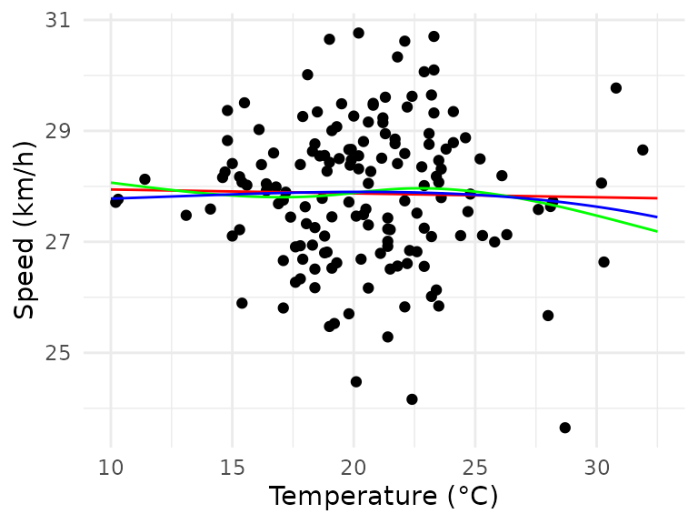
The B-spline (blue) seems to fit slightly better, the natural cubic spline (green) would not fit well for lower temperatures. However, neither of the spline models has a significant parameter besides the intercept, so they are not viable either.
Thus, temperature seems to have either not have any effect, or the effect is so small that a lot more data would be required to reliably detect it.
Effects of Track Length, Inclination, and Heart Rate
Another model that seems rather intuitive is to use a track’s distance, average inclination, and average heart rate to model the average speed:
fit_dihr <- lm(speed_km_h ~ distance_km + avg_inclination + avg_hr_bpm, data = corrected_tracks)
summary(fit_dihr)
#>
#> Call:
#> lm(formula = speed_km_h ~ distance_km + avg_inclination + avg_hr_bpm,
#> data = corrected_tracks)
#>
#> Residuals:
#> Min 1Q Median 3Q Max
#> -3.04856 -0.47765 0.08545 0.51618 2.38627
#>
#> Coefficients:
#> Estimate Std. Error t value Pr(>|t|)
#> (Intercept) 2.193e+01 1.272e+00 17.243 < 2e-16 ***
#> distance_km -7.525e-03 3.852e-03 -1.954 0.0526 .
#> avg_inclination -4.206e+02 3.931e+01 -10.701 < 2e-16 ***
#> avg_hr_bpm 7.484e-02 8.444e-03 8.863 1.87e-15 ***
#> ---
#> Signif. codes: 0 '***' 0.001 '**' 0.01 '*' 0.05 '.' 0.1 ' ' 1
#>
#> Residual standard error: 0.8418 on 153 degrees of freedom
#> Multiple R-squared: 0.5839, Adjusted R-squared: 0.5757
#> F-statistic: 71.55 on 3 and 153 DF, p-value: < 2.2e-16This model shows that inclination and heart rate are highly significant, whereas the distance is not. The estimated coefficients indicate the expected relationships:
- steeper tracks (i.e. higher average inclination) have a lower average speed
- a higher effort (i.e. a higher average heart rate) leads to a higher average speed
- longer distances lead to a lower speed (however, this is relationship is not statistically significant)
Furthermore, a model based on these three predictors can account for almost 60% of the observed variance in the data.
Evaluating the model:
plot(fit_dihr)The model has some obvious weaknesses (residuals at the lower and higher ends of the observed speed spectrum are not as close to zero as they should be, and one track (number 2) has a relatively large residual error and leverage), but overall it seems not too bad.
Effect of Previous Training Session
Another potential factor to influence average speed is the previous training: one could reasonably expect that a training session too shortly after another one would negatively affect speed for the second training. On the other hand, too long of a break between trainings should probably also negatively affect average speed (assuming that a positive effect of a training is slowly lost over time).
To validate this hypothesis, the previous model using distance, inclination, and heart rate can be extended with the number of days since the last training, and the previous training’s distance, inclination and average heart rate:
corrected_tracks <- corrected_tracks |>
mutate(
previous_training_date = lag(date),
days_since_previous_training = as.numeric(difftime(date, previous_training_date, units = "days"))
)
augmented_tracks <- corrected_tracks |>
inner_join(corrected_tracks, join_by(previous_training_date == date), suffix = c("", "_previous_training"))
fit_pt <- lm(speed_km_h ~ distance_km + avg_inclination + avg_hr_bpm + days_since_previous_training + distance_km_previous_training + avg_inclination_previous_training + avg_hr_bpm_previous_training, data = augmented_tracks)
summary(fit_pt)
#>
#> Call:
#> lm(formula = speed_km_h ~ distance_km + avg_inclination + avg_hr_bpm +
#> days_since_previous_training + distance_km_previous_training +
#> avg_inclination_previous_training + avg_hr_bpm_previous_training,
#> data = augmented_tracks)
#>
#> Residuals:
#> Min 1Q Median 3Q Max
#> -2.80543 -0.51481 0.06608 0.49832 2.35074
#>
#> Coefficients:
#> Estimate Std. Error t value Pr(>|t|)
#> (Intercept) 2.182e+01 1.367e+00 15.967 < 2e-16 ***
#> distance_km -1.127e-02 4.125e-03 -2.732 0.00707 **
#> avg_inclination -4.224e+02 3.935e+01 -10.735 < 2e-16 ***
#> avg_hr_bpm 7.834e-02 1.219e-02 6.427 1.68e-09 ***
#> days_since_previous_training -3.606e-03 1.626e-03 -2.218 0.02811 *
#> distance_km_previous_training 9.850e-03 4.184e-03 2.354 0.01989 *
#> avg_inclination_previous_training -5.667e+01 3.871e+01 -1.464 0.14534
#> avg_hr_bpm_previous_training 4.168e-04 1.207e-02 0.035 0.97250
#> ---
#> Signif. codes: 0 '***' 0.001 '**' 0.01 '*' 0.05 '.' 0.1 ' ' 1
#>
#> Residual standard error: 0.8206 on 148 degrees of freedom
#> Multiple R-squared: 0.6152, Adjusted R-squared: 0.597
#> F-statistic: 33.8 on 7 and 148 DF, p-value: < 2.2e-16In this model, the days since the previous training, and the previous training’s distance are significant factors, the previous training’s inclination and average heart rate are not. This seems counterintuitive, considering in the previous, simpler model (the one without considering the previous training), the distance was not a significant factor, and inclination and heart rate were highly significant. In this extended model, inclination and heart rate are still significant for the current training, but are not significant for the previous training. Furthermore, both the current and the previous training’s distance is now a significant predictor.
While some of the additional predictors are significant, the extended model only explains about an additional three percentage points of variance in the data. Additionally, the diagnostic plots look much worse than for the simpler model:
plot(fit_pt)

There are now data points with higher leverage than before which also have larger residuals, the QQ-plot shows a larger deviation from the diagonal at the low end, and the residuals plot looks worse as well. Overall, taking the previous training into account seems to not be worthwile: the model only explains slightly more variance, at the cost of significantly worse diagnostics.
Effects of Training Season
Since the data is actually a time series, it seems likely that there is a time-based aspect to a potential training effect. In order to take this into consideration for a linear model, the month and calendar week were tried as predictors.
tracks_speed_month <- corrected_tracks |>
mutate(month = as.factor(month(date))) |>
select(speed_km_h, month)
fit_month <- lm(speed_km_h ~ month, data = tracks_speed_month)
summary(fit_month)
#>
#> Call:
#> lm(formula = speed_km_h ~ month, data = tracks_speed_month)
#>
#> Residuals:
#> Min 1Q Median 3Q Max
#> -3.9110 -0.8636 0.1374 0.7991 3.0588
#>
#> Coefficients:
#> Estimate Std. Error t value Pr(>|t|)
#> (Intercept) 26.9297 1.2843 20.969 <2e-16 ***
#> month4 1.2657 1.3293 0.952 0.343
#> month5 1.5226 1.3160 1.157 0.249
#> month6 0.7667 1.3042 0.588 0.558
#> month7 0.6297 1.3087 0.481 0.631
#> month8 0.8073 1.3048 0.619 0.537
#> month9 1.1544 1.3119 0.880 0.380
#> month10 0.7003 1.3470 0.520 0.604
#> ---
#> Signif. codes: 0 '***' 0.001 '**' 0.01 '*' 0.05 '.' 0.1 ' ' 1
#>
#> Residual standard error: 1.284 on 149 degrees of freedom
#> Multiple R-squared: 0.0568, Adjusted R-squared: 0.01249
#> F-statistic: 1.282 on 7 and 149 DF, p-value: 0.263Apparently, later months do not have a significantly different average speed than the first month in the data (i.e. March). Using Helmert contrasts instead of the (default) treatment contrasts to compare later months to preceding months (instead of comparing to the March baseline), there are again no significant results:
contrasts(tracks_speed_month$month) <- "contr.helmert"
summary(lm(speed_km_h ~ month, data = tracks_speed_month))
#>
#> Call:
#> lm(formula = speed_km_h ~ month, data = tracks_speed_month)
#>
#> Residuals:
#> Min 1Q Median 3Q Max
#> -3.9110 -0.8636 0.1374 0.7991 3.0588
#>
#> Coefficients:
#> Estimate Std. Error t value Pr(>|t|)
#> (Intercept) 27.78555 0.18769 148.043 <2e-16 ***
#> month1 0.63286 0.66467 0.952 0.343
#> month2 0.29659 0.24135 1.229 0.221
#> month3 -0.04069 0.12675 -0.321 0.749
#> month4 -0.05181 0.08538 -0.607 0.545
#> month5 -0.00494 0.06051 -0.082 0.935
#> month6 0.04605 0.05106 0.902 0.369
#> month7 -0.02222 0.05695 -0.390 0.697
#> ---
#> Signif. codes: 0 '***' 0.001 '**' 0.01 '*' 0.05 '.' 0.1 ' ' 1
#>
#> Residual standard error: 1.284 on 149 degrees of freedom
#> Multiple R-squared: 0.0568, Adjusted R-squared: 0.01249
#> F-statistic: 1.282 on 7 and 149 DF, p-value: 0.263Maybe, however, the training effect lies in the fact that later in the season the average track is longer/steeper/more exhausting in general?
corrected_tracks |>
ggplot(aes(x = as.factor(month(date)), y = distance_km)) +
geom_boxplot() +
geom_jitter(width = 0.25, color = "#0000f0", alpha = 0.5) +
labs(x = "Month", y = "Distance (km)") +
ggtitle("Track Length by Month")Overall, and with the exception of March (for which there is only one data point), at least the median length of the tracks seems to follow a pattern of longer tracks during the summer, and shorter tracks at the beginning and end of the season. This might be related to fitness level, and/or to the weather (temperature, precipitation) and available daylight (longer days in the summer months, shorter days in spring and fall).
Thus, let’s try a model taking into account the month, as well as the distance, inclination, and heart rate, and their interaction with the month:
fit_month_and_more <- lm(speed_km_h ~ as.factor(month(date)) * (distance_km + avg_hr_bpm + avg_inclination), data = corrected_tracks)
summary(fit_month_and_more)
#>
#> Call:
#> lm(formula = speed_km_h ~ as.factor(month(date)) * (distance_km +
#> avg_hr_bpm + avg_inclination), data = corrected_tracks)
#>
#> Residuals:
#> Min 1Q Median 3Q Max
#> -2.18792 -0.40704 0.06077 0.41516 1.79607
#>
#> Coefficients: (3 not defined because of singularities)
#> Estimate Std. Error t value Pr(>|t|)
#> (Intercept) 2.422e+01 4.299e+00 5.634 1.07e-07
#> as.factor(month(date))4 1.401e+01 7.179e+00 1.951 0.05321
#> as.factor(month(date))5 5.452e+00 6.390e+00 0.853 0.39518
#> as.factor(month(date))6 -8.583e+00 4.885e+00 -1.757 0.08127
#> as.factor(month(date))7 -8.261e+00 5.284e+00 -1.564 0.12040
#> as.factor(month(date))8 -3.090e+00 5.144e+00 -0.601 0.54910
#> as.factor(month(date))9 -3.777e+00 5.314e+00 -0.711 0.47846
#> as.factor(month(date))10 9.444e-01 1.118e+00 0.845 0.39987
#> distance_km 9.491e-03 3.007e-02 0.316 0.75282
#> avg_hr_bpm 3.443e-02 3.118e-02 1.104 0.27154
#> avg_inclination -2.591e+02 1.093e+02 -2.371 0.01921
#> as.factor(month(date))4:distance_km -5.165e-02 3.450e-02 -1.497 0.13681
#> as.factor(month(date))5:distance_km -2.113e-02 3.532e-02 -0.598 0.55074
#> as.factor(month(date))6:distance_km -4.167e-03 3.127e-02 -0.133 0.89417
#> as.factor(month(date))7:distance_km -2.269e-02 3.081e-02 -0.737 0.46274
#> as.factor(month(date))8:distance_km -1.204e-02 3.098e-02 -0.389 0.69826
#> as.factor(month(date))9:distance_km -3.563e-02 3.284e-02 -1.085 0.27999
#> as.factor(month(date))10:distance_km NA NA NA NA
#> as.factor(month(date))4:avg_hr_bpm -6.154e-02 5.019e-02 -1.226 0.22238
#> as.factor(month(date))5:avg_hr_bpm -7.934e-03 4.438e-02 -0.179 0.85839
#> as.factor(month(date))6:avg_hr_bpm 1.045e-01 3.699e-02 2.824 0.00550
#> as.factor(month(date))7:avg_hr_bpm 7.897e-02 3.694e-02 2.138 0.03443
#> as.factor(month(date))8:avg_hr_bpm 5.322e-02 3.585e-02 1.484 0.14020
#> as.factor(month(date))9:avg_hr_bpm 3.792e-02 3.807e-02 0.996 0.32108
#> as.factor(month(date))10:avg_hr_bpm NA NA NA NA
#> as.factor(month(date))4:avg_inclination -1.792e+02 1.718e+02 -1.043 0.29875
#> as.factor(month(date))5:avg_inclination -2.062e+02 1.590e+02 -1.297 0.19707
#> as.factor(month(date))6:avg_inclination -4.468e+02 1.669e+02 -2.677 0.00841
#> as.factor(month(date))7:avg_inclination -1.110e+02 1.336e+02 -0.831 0.40770
#> as.factor(month(date))8:avg_inclination -2.608e+02 1.321e+02 -1.974 0.05057
#> as.factor(month(date))9:avg_inclination 9.679e+01 1.685e+02 0.575 0.56663
#> as.factor(month(date))10:avg_inclination NA NA NA NA
#>
#> (Intercept) ***
#> as.factor(month(date))4 .
#> as.factor(month(date))5
#> as.factor(month(date))6 .
#> as.factor(month(date))7
#> as.factor(month(date))8
#> as.factor(month(date))9
#> as.factor(month(date))10
#> distance_km
#> avg_hr_bpm
#> avg_inclination *
#> as.factor(month(date))4:distance_km
#> as.factor(month(date))5:distance_km
#> as.factor(month(date))6:distance_km
#> as.factor(month(date))7:distance_km
#> as.factor(month(date))8:distance_km
#> as.factor(month(date))9:distance_km
#> as.factor(month(date))10:distance_km
#> as.factor(month(date))4:avg_hr_bpm
#> as.factor(month(date))5:avg_hr_bpm
#> as.factor(month(date))6:avg_hr_bpm **
#> as.factor(month(date))7:avg_hr_bpm *
#> as.factor(month(date))8:avg_hr_bpm
#> as.factor(month(date))9:avg_hr_bpm
#> as.factor(month(date))10:avg_hr_bpm
#> as.factor(month(date))4:avg_inclination
#> as.factor(month(date))5:avg_inclination
#> as.factor(month(date))6:avg_inclination **
#> as.factor(month(date))7:avg_inclination
#> as.factor(month(date))8:avg_inclination .
#> as.factor(month(date))9:avg_inclination
#> as.factor(month(date))10:avg_inclination
#> ---
#> Signif. codes: 0 '***' 0.001 '**' 0.01 '*' 0.05 '.' 0.1 ' ' 1
#>
#> Residual standard error: 0.7615 on 128 degrees of freedom
#> Multiple R-squared: 0.7151, Adjusted R-squared: 0.6528
#> F-statistic: 11.48 on 28 and 128 DF, p-value: < 2.2e-16Due to the dummy-coded month variable and the interactions, there are
now a lot more parameters, only few of which are significant.
Furthermore, the interactions with the October-level of the month
variable produce NAs, suggesting multicollinearity or some
other problem.
The model now explains about 71% of the variance in the data, however, due to the model complexity, and the large number of non-significant parameters, it appears dubious whether the model is appropriate.
The diagnostic plots, on the other hand, don’t look too bad (though worse than those of the simpler model using just distance, inclination, and heart rate):
plot(fit_month_and_more)Trying the same thing with higher temporal resolution (using calendar week instead of month) is pointless, though:
corrected_tracks |>
ggplot(aes(x = as.factor(isoweek(date)), y = distance_km)) +
geom_boxplot() +
geom_jitter(width = 0.25, color = "#0000f0", alpha = 0.5) +
labs(x = "Calendar Week", y = "Distance (km)") +
ggtitle("Track Length by Calendar Week")There are now a lot more factor levels, and correspondingly fewer data points per level, so fitting a model in the same way as for month just results in a model with lots of non-significant parameters:
#>
#> Call:
#> lm(formula = speed_km_h ~ as.factor(isoweek(date)) * (distance_km +
#> avg_hr_bpm + avg_inclination), data = corrected_tracks)
#>
#> Residuals:
#> Min 1Q Median 3Q Max
#> -1.9400 -0.2377 0.0000 0.1475 2.1459
#>
#> Coefficients: (15 not defined because of singularities)
#> Estimate Std. Error t value
#> (Intercept) 1.783e+01 9.223e+00 1.933
#> as.factor(isoweek(date))14 5.127e-01 5.991e+00 0.086
#> as.factor(isoweek(date))15 4.730e+01 2.201e+02 0.215
#> as.factor(isoweek(date))16 6.872e+01 2.573e+01 2.671
#> as.factor(isoweek(date))17 8.307e+00 3.011e+01 0.276
#> as.factor(isoweek(date))18 -1.559e+02 2.703e+02 -0.577
#> as.factor(isoweek(date))19 3.307e+01 5.343e+01 0.619
#> as.factor(isoweek(date))21 8.707e+00 1.115e+01 0.781
#> as.factor(isoweek(date))22 1.745e+00 1.091e+01 0.160
#> as.factor(isoweek(date))23 -8.769e-01 1.183e+01 -0.074
#> as.factor(isoweek(date))24 9.441e-01 1.003e+01 0.094
#> as.factor(isoweek(date))25 -2.428e+00 1.210e+01 -0.201
#> as.factor(isoweek(date))26 -1.566e+01 1.218e+01 -1.286
#> as.factor(isoweek(date))27 3.127e+01 1.841e+02 0.170
#> as.factor(isoweek(date))28 -4.288e+00 1.119e+01 -0.383
#> as.factor(isoweek(date))29 -8.458e+00 1.112e+01 -0.760
#> as.factor(isoweek(date))30 -1.976e+00 1.248e+01 -0.158
#> as.factor(isoweek(date))31 8.720e+00 1.027e+01 0.849
#> as.factor(isoweek(date))32 3.753e+00 1.064e+01 0.353
#> as.factor(isoweek(date))33 -4.268e+00 1.301e+01 -0.328
#> as.factor(isoweek(date))34 9.199e-01 1.048e+01 0.088
#> as.factor(isoweek(date))35 3.831e+00 4.188e+01 0.091
#> as.factor(isoweek(date))36 4.993e+00 2.165e+01 0.231
#> as.factor(isoweek(date))37 1.808e+01 2.441e+01 0.741
#> as.factor(isoweek(date))38 -6.360e+00 6.210e+01 -0.102
#> as.factor(isoweek(date))39 -1.552e+01 1.619e+01 -0.959
#> as.factor(isoweek(date))40 1.379e+01 1.898e+01 0.727
#> as.factor(isoweek(date))41 -1.676e+00 1.078e+01 -0.155
#> as.factor(isoweek(date))43 7.124e-01 1.497e+00 0.476
#> distance_km 1.894e-03 1.898e-01 0.010
#> avg_hr_bpm 8.325e-02 5.184e-02 1.606
#> avg_inclination -3.201e+02 1.609e+02 -1.990
#> as.factor(isoweek(date))14:distance_km NA NA NA
#> as.factor(isoweek(date))15:distance_km -1.519e-01 1.404e+00 -0.108
#> as.factor(isoweek(date))16:distance_km 7.010e-01 4.406e-01 1.591
#> as.factor(isoweek(date))17:distance_km -2.736e-02 1.931e-01 -0.142
#> as.factor(isoweek(date))18:distance_km 6.243e+00 1.063e+01 0.587
#> as.factor(isoweek(date))19:distance_km 6.980e-01 7.662e-01 0.911
#> as.factor(isoweek(date))21:distance_km -5.726e-03 1.916e-01 -0.030
#> as.factor(isoweek(date))22:distance_km -2.839e-03 1.907e-01 -0.015
#> as.factor(isoweek(date))23:distance_km 2.902e-03 1.909e-01 0.015
#> as.factor(isoweek(date))24:distance_km -7.468e-03 1.918e-01 -0.039
#> as.factor(isoweek(date))25:distance_km -2.234e-02 1.949e-01 -0.115
#> as.factor(isoweek(date))26:distance_km -8.857e-04 1.912e-01 -0.005
#> as.factor(isoweek(date))27:distance_km 4.921e-01 2.727e+00 0.180
#> as.factor(isoweek(date))28:distance_km -1.889e-03 1.915e-01 -0.010
#> as.factor(isoweek(date))29:distance_km -2.818e-02 1.902e-01 -0.148
#> as.factor(isoweek(date))30:distance_km -2.480e-02 1.905e-01 -0.130
#> as.factor(isoweek(date))31:distance_km -3.739e-03 1.900e-01 -0.020
#> as.factor(isoweek(date))32:distance_km -8.034e-03 1.904e-01 -0.042
#> as.factor(isoweek(date))33:distance_km -1.355e-02 1.906e-01 -0.071
#> as.factor(isoweek(date))34:distance_km 1.575e-02 1.901e-01 0.083
#> as.factor(isoweek(date))35:distance_km 3.925e-02 4.197e-01 0.094
#> as.factor(isoweek(date))36:distance_km -1.310e-02 1.916e-01 -0.068
#> as.factor(isoweek(date))37:distance_km 1.773e-01 3.463e-01 0.512
#> as.factor(isoweek(date))38:distance_km -1.810e-01 6.844e-01 -0.264
#> as.factor(isoweek(date))39:distance_km -1.334e-02 1.978e-01 -0.067
#> as.factor(isoweek(date))40:distance_km 5.990e-03 1.919e-01 0.031
#> as.factor(isoweek(date))41:distance_km 7.456e-02 2.017e-01 0.370
#> as.factor(isoweek(date))43:distance_km NA NA NA
#> as.factor(isoweek(date))14:avg_hr_bpm NA NA NA
#> as.factor(isoweek(date))15:avg_hr_bpm -2.782e-01 1.389e+00 -0.200
#> as.factor(isoweek(date))16:avg_hr_bpm -4.800e-02 1.188e-01 -0.404
#> as.factor(isoweek(date))17:avg_hr_bpm -4.019e-02 2.009e-01 -0.200
#> as.factor(isoweek(date))18:avg_hr_bpm NA NA NA
#> as.factor(isoweek(date))19:avg_hr_bpm -3.379e-02 1.875e-01 -0.180
#> as.factor(isoweek(date))21:avg_hr_bpm -2.646e-02 7.117e-02 -0.372
#> as.factor(isoweek(date))22:avg_hr_bpm 7.164e-03 6.783e-02 0.106
#> as.factor(isoweek(date))23:avg_hr_bpm 4.386e-02 8.661e-02 0.506
#> as.factor(isoweek(date))24:avg_hr_bpm 3.671e-02 7.105e-02 0.517
#> as.factor(isoweek(date))25:avg_hr_bpm 1.050e-01 9.454e-02 1.110
#> as.factor(isoweek(date))26:avg_hr_bpm 1.392e-01 7.541e-02 1.847
#> as.factor(isoweek(date))27:avg_hr_bpm 4.189e-02 1.972e-01 0.212
#> as.factor(isoweek(date))28:avg_hr_bpm 3.029e-02 7.143e-02 0.424
#> as.factor(isoweek(date))29:avg_hr_bpm 7.027e-02 6.379e-02 1.101
#> as.factor(isoweek(date))30:avg_hr_bpm 4.646e-02 7.709e-02 0.603
#> as.factor(isoweek(date))31:avg_hr_bpm -4.919e-02 5.967e-02 -0.824
#> as.factor(isoweek(date))32:avg_hr_bpm 1.709e-02 6.734e-02 0.254
#> as.factor(isoweek(date))33:avg_hr_bpm 4.439e-02 7.239e-02 0.613
#> as.factor(isoweek(date))34:avg_hr_bpm NA NA NA
#> as.factor(isoweek(date))35:avg_hr_bpm 2.786e-02 9.976e-02 0.279
#> as.factor(isoweek(date))36:avg_hr_bpm -1.468e-02 1.264e-01 -0.116
#> as.factor(isoweek(date))37:avg_hr_bpm -3.462e-02 7.016e-02 -0.493
#> as.factor(isoweek(date))38:avg_hr_bpm -4.966e-02 7.755e-02 -0.640
#> as.factor(isoweek(date))39:avg_hr_bpm 1.084e-01 9.900e-02 1.095
#> as.factor(isoweek(date))40:avg_hr_bpm -1.295e-01 1.858e-01 -0.697
#> as.factor(isoweek(date))41:avg_hr_bpm NA NA NA
#> as.factor(isoweek(date))43:avg_hr_bpm NA NA NA
#> as.factor(isoweek(date))14:avg_inclination NA NA NA
#> as.factor(isoweek(date))15:avg_inclination NA NA NA
#> as.factor(isoweek(date))16:avg_inclination -8.300e+03 4.507e+03 -1.841
#> as.factor(isoweek(date))17:avg_inclination NA NA NA
#> as.factor(isoweek(date))18:avg_inclination NA NA NA
#> as.factor(isoweek(date))19:avg_inclination -4.700e+03 5.102e+03 -0.921
#> as.factor(isoweek(date))21:avg_inclination -3.398e+02 3.040e+02 -1.118
#> as.factor(isoweek(date))22:avg_inclination -1.167e+02 2.458e+02 -0.475
#> as.factor(isoweek(date))23:avg_inclination -3.543e+02 4.112e+02 -0.862
#> as.factor(isoweek(date))24:avg_inclination -3.861e+02 5.216e+02 -0.740
#> as.factor(isoweek(date))25:avg_inclination -8.385e+02 7.079e+02 -1.184
#> as.factor(isoweek(date))26:avg_inclination -2.399e+02 2.880e+02 -0.833
#> as.factor(isoweek(date))27:avg_inclination -5.289e+03 3.030e+04 -0.175
#> as.factor(isoweek(date))28:avg_inclination NA NA NA
#> as.factor(isoweek(date))29:avg_inclination 8.114e+01 2.879e+02 0.282
#> as.factor(isoweek(date))30:avg_inclination -1.315e+02 3.317e+02 -0.397
#> as.factor(isoweek(date))31:avg_inclination -2.751e+01 1.835e+02 -0.150
#> as.factor(isoweek(date))32:avg_inclination -3.697e+02 2.639e+02 -1.401
#> as.factor(isoweek(date))33:avg_inclination 1.019e+01 2.583e+02 0.039
#> as.factor(isoweek(date))34:avg_inclination NA NA NA
#> as.factor(isoweek(date))35:avg_inclination -7.534e+02 4.309e+03 -0.175
#> as.factor(isoweek(date))36:avg_inclination -7.249e+01 3.743e+02 -0.194
#> as.factor(isoweek(date))37:avg_inclination -1.766e+03 3.178e+03 -0.556
#> as.factor(isoweek(date))38:avg_inclination 2.181e+03 7.739e+03 0.282
#> as.factor(isoweek(date))39:avg_inclination 1.863e+02 2.521e+02 0.739
#> as.factor(isoweek(date))40:avg_inclination 5.615e+02 9.226e+02 0.609
#> as.factor(isoweek(date))41:avg_inclination NA NA NA
#> as.factor(isoweek(date))43:avg_inclination NA NA NA
#> Pr(>|t|)
#> (Intercept) 0.05831 .
#> as.factor(isoweek(date))14 0.93210
#> as.factor(isoweek(date))15 0.83061
#> as.factor(isoweek(date))16 0.00989 **
#> as.factor(isoweek(date))17 0.78365
#> as.factor(isoweek(date))18 0.56627
#> as.factor(isoweek(date))19 0.53855
#> as.factor(isoweek(date))21 0.43819
#> as.factor(isoweek(date))22 0.87352
#> as.factor(isoweek(date))23 0.94118
#> as.factor(isoweek(date))24 0.92535
#> as.factor(isoweek(date))25 0.84163
#> as.factor(isoweek(date))26 0.20374
#> as.factor(isoweek(date))27 0.86573
#> as.factor(isoweek(date))28 0.70295
#> as.factor(isoweek(date))29 0.45025
#> as.factor(isoweek(date))30 0.87473
#> as.factor(isoweek(date))31 0.39935
#> as.factor(isoweek(date))32 0.72566
#> as.factor(isoweek(date))33 0.74411
#> as.factor(isoweek(date))34 0.93039
#> as.factor(isoweek(date))35 0.92744
#> as.factor(isoweek(date))36 0.81840
#> as.factor(isoweek(date))37 0.46202
#> as.factor(isoweek(date))38 0.91878
#> as.factor(isoweek(date))39 0.34181
#> as.factor(isoweek(date))40 0.47051
#> as.factor(isoweek(date))41 0.87701
#> as.factor(isoweek(date))43 0.63598
#> distance_km 0.99207
#> avg_hr_bpm 0.11391
#> avg_inclination 0.05153 .
#> as.factor(isoweek(date))14:distance_km NA
#> as.factor(isoweek(date))15:distance_km 0.91422
#> as.factor(isoweek(date))16:distance_km 0.11719
#> as.factor(isoweek(date))17:distance_km 0.88786
#> as.factor(isoweek(date))18:distance_km 0.55945
#> as.factor(isoweek(date))19:distance_km 0.36623
#> as.factor(isoweek(date))21:distance_km 0.97626
#> as.factor(isoweek(date))22:distance_km 0.98818
#> as.factor(isoweek(date))23:distance_km 0.98793
#> as.factor(isoweek(date))24:distance_km 0.96909
#> as.factor(isoweek(date))25:distance_km 0.90915
#> as.factor(isoweek(date))26:distance_km 0.99632
#> as.factor(isoweek(date))27:distance_km 0.85742
#> as.factor(isoweek(date))28:distance_km 0.99216
#> as.factor(isoweek(date))29:distance_km 0.88273
#> as.factor(isoweek(date))30:distance_km 0.89688
#> as.factor(isoweek(date))31:distance_km 0.98437
#> as.factor(isoweek(date))32:distance_km 0.96649
#> as.factor(isoweek(date))33:distance_km 0.94360
#> as.factor(isoweek(date))34:distance_km 0.93427
#> as.factor(isoweek(date))35:distance_km 0.92583
#> as.factor(isoweek(date))36:distance_km 0.94572
#> as.factor(isoweek(date))37:distance_km 0.61058
#> as.factor(isoweek(date))38:distance_km 0.79237
#> as.factor(isoweek(date))39:distance_km 0.94648
#> as.factor(isoweek(date))40:distance_km 0.97521
#> as.factor(isoweek(date))41:distance_km 0.71303
#> as.factor(isoweek(date))43:distance_km NA
#> as.factor(isoweek(date))14:avg_hr_bpm NA
#> as.factor(isoweek(date))15:avg_hr_bpm 0.84191
#> as.factor(isoweek(date))16:avg_hr_bpm 0.68769
#> as.factor(isoweek(date))17:avg_hr_bpm 0.84212
#> as.factor(isoweek(date))18:avg_hr_bpm NA
#> as.factor(isoweek(date))19:avg_hr_bpm 0.85764
#> as.factor(isoweek(date))21:avg_hr_bpm 0.71145
#> as.factor(isoweek(date))22:avg_hr_bpm 0.91626
#> as.factor(isoweek(date))23:avg_hr_bpm 0.61458
#> as.factor(isoweek(date))24:avg_hr_bpm 0.60744
#> as.factor(isoweek(date))25:avg_hr_bpm 0.27163
#> as.factor(isoweek(date))26:avg_hr_bpm 0.07009 .
#> as.factor(isoweek(date))27:avg_hr_bpm 0.83252
#> as.factor(isoweek(date))28:avg_hr_bpm 0.67312
#> as.factor(isoweek(date))29:avg_hr_bpm 0.27541
#> as.factor(isoweek(date))30:avg_hr_bpm 0.54916
#> as.factor(isoweek(date))31:avg_hr_bpm 0.41327
#> as.factor(isoweek(date))32:avg_hr_bpm 0.80053
#> as.factor(isoweek(date))33:avg_hr_bpm 0.54226
#> as.factor(isoweek(date))34:avg_hr_bpm NA
#> as.factor(isoweek(date))35:avg_hr_bpm 0.78109
#> as.factor(isoweek(date))36:avg_hr_bpm 0.90797
#> as.factor(isoweek(date))37:avg_hr_bpm 0.62365
#> as.factor(isoweek(date))38:avg_hr_bpm 0.52450
#> as.factor(isoweek(date))39:avg_hr_bpm 0.27830
#> as.factor(isoweek(date))40:avg_hr_bpm 0.48882
#> as.factor(isoweek(date))41:avg_hr_bpm NA
#> as.factor(isoweek(date))43:avg_hr_bpm NA
#> as.factor(isoweek(date))14:avg_inclination NA
#> as.factor(isoweek(date))15:avg_inclination NA
#> as.factor(isoweek(date))16:avg_inclination 0.07087 .
#> as.factor(isoweek(date))17:avg_inclination NA
#> as.factor(isoweek(date))18:avg_inclination NA
#> as.factor(isoweek(date))19:avg_inclination 0.36091
#> as.factor(isoweek(date))21:avg_inclination 0.26845
#> as.factor(isoweek(date))22:avg_inclination 0.63664
#> as.factor(isoweek(date))23:avg_inclination 0.39263
#> as.factor(isoweek(date))24:avg_inclination 0.46222
#> as.factor(isoweek(date))25:avg_inclination 0.24124
#> as.factor(isoweek(date))26:avg_inclination 0.40844
#> as.factor(isoweek(date))27:avg_inclination 0.86206
#> as.factor(isoweek(date))28:avg_inclination NA
#> as.factor(isoweek(date))29:avg_inclination 0.77908
#> as.factor(isoweek(date))30:avg_inclination 0.69319
#> as.factor(isoweek(date))31:avg_inclination 0.88137
#> as.factor(isoweek(date))32:avg_inclination 0.16673
#> as.factor(isoweek(date))33:avg_inclination 0.96866
#> as.factor(isoweek(date))34:avg_inclination NA
#> as.factor(isoweek(date))35:avg_inclination 0.86181
#> as.factor(isoweek(date))36:avg_inclination 0.84713
#> as.factor(isoweek(date))37:avg_inclination 0.58066
#> as.factor(isoweek(date))38:avg_inclination 0.77913
#> as.factor(isoweek(date))39:avg_inclination 0.46301
#> as.factor(isoweek(date))40:avg_inclination 0.54523
#> as.factor(isoweek(date))41:avg_inclination NA
#> as.factor(isoweek(date))43:avg_inclination NA
#> ---
#> Signif. codes: 0 '***' 0.001 '**' 0.01 '*' 0.05 '.' 0.1 ' ' 1
#>
#> Residual standard error: 0.7884 on 56 degrees of freedom
#> Multiple R-squared: 0.8664, Adjusted R-squared: 0.6279
#> F-statistic: 3.632 on 100 and 56 DF, p-value: 3.102e-07While the R-squared has again improved (now explaining 86% of the variance), the diagnostics plots look terrible (see QQ-plot, and residuals vs. leverage plot), suggesting the same thing mentioned before: realistically, the model is useless.
plot(fit_calendar_week_and_more)ElasticNet
In order to identify which predictors are important, an ElasticNet
fit can be tried. The point to keep in mind here is that the average
inclination is a very important predictor, but the values are very
small, which will result in a rather large model coefficient. Therefore,
to make the other coefficients visible in the trace plot, the
avg_inclination value was scaled by a factor of 100
(i.e. an average inclination of 1 now corresponds to 1% of
inclination).
numerical_track_components <- corrected_tracks |>
select(!date & !previous_training_date & !weekday & !samples & !altitude_gain_m) |>
mutate(avg_inclination = avg_inclination * 100) # scale avg. inclination to %
training_set_ratio <- 0.7
training_set_indices <-
sample(1:nrow(numerical_track_components),
nrow(numerical_track_components) * training_set_ratio) |>
sort()
training_set <- numerical_track_components[training_set_indices,]
test_set <- numerical_track_components[setdiff(1:nrow(numerical_track_components), training_set_indices),]
# glmnet mixing param (hyperparameter; should be tuned instead of hard-coded)
# for now: alpha = 1, i.e. Lasso regression (0 = Ridge; 0 < alpha < 1 = mixed)
alpha <- 1
fit_glm <- glmnet(
x = training_set |> na.omit() |> select(!speed_km_h),
y = training_set |> na.omit() |> select(speed_km_h) |> as.matrix(),
alpha = alpha)
cv_glm <- cv.glmnet(
x = training_set |> na.omit() |> select(!speed_km_h) |> as.matrix(),
y = training_set |> na.omit() |> select(speed_km_h) |> as.matrix(),
alpha = alpha)
plot(fit_glm, xvar = "lambda")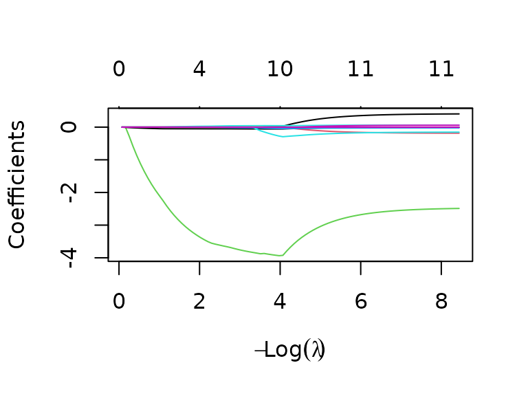
plot(cv_glm)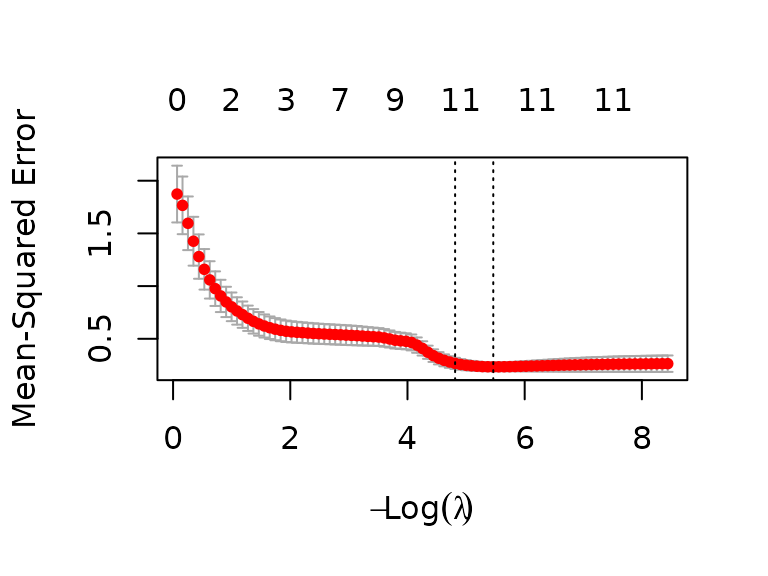
As can be seen, with a Lasso regression, the algorithm will create a model using 11 predictors (and an intercept) for both the 1 SE , and for the minimum MSE :
coef(fit_glm, cv_glm$lambda.1se)
#> 13 x 1 sparse Matrix of class "dgCMatrix"
#> s1
#> (Intercept) 24.544688191
#> distance_km 0.222572784
#> time_min -0.096183174
#> avg_inclination -3.157811718
#> temperature_c -0.010519095
#> avg_hr_bpm 0.051116808
#> below_zones_min 0.017428942
#> zone1_min -0.028204552
#> zone2_min -0.010900509
#> zone3_min .
#> zone4_min -0.035141159
#> above_zones_min -0.226121274
#> days_since_previous_training -0.001913364
coef(fit_glm, cv_glm$lambda.min)
#> 13 x 1 sparse Matrix of class "dgCMatrix"
#> s1
#> (Intercept) 23.174671976
#> distance_km 0.312168642
#> time_min -0.140060373
#> avg_inclination -2.829044363
#> temperature_c -0.007161805
#> avg_hr_bpm 0.056357324
#> below_zones_min 0.037595273
#> zone1_min -0.016642557
#> zone2_min -0.006091218
#> zone3_min .
#> zone4_min -0.028929052
#> above_zones_min -0.190123416
#> days_since_previous_training -0.001988406However, in both models there are a lot of variables that are probably relatively strongly correlated (e.g. all the heart rate variables, or the time and distance variables):
cor(numerical_track_components)
#> distance_km time_min avg_inclination
#> distance_km 1.00000000 0.99474215 0.33422876
#> time_min 0.99474215 1.00000000 0.37183666
#> avg_inclination 0.33422876 0.37183666 1.00000000
#> temperature_c -0.19636208 -0.18316844 -0.07903338
#> speed_km_h -0.32500914 -0.40933582 -0.59341356
#> avg_hr_bpm -0.03815031 -0.08038793 0.08161380
#> below_zones_min 0.40972476 0.45401028 0.23265284
#> zone1_min 0.54084746 0.59348768 0.20371427
#> zone2_min 0.86476066 0.88317090 0.23984065
#> zone3_min 0.84223292 0.81063842 0.30831494
#> zone4_min 0.22653389 0.21070544 0.28612873
#> above_zones_min -0.04612616 -0.04857525 -0.03472193
#> days_since_previous_training NA NA NA
#> temperature_c speed_km_h avg_hr_bpm
#> distance_km -0.19636208 -0.32500914 -0.03815031
#> time_min -0.18316844 -0.40933582 -0.08038793
#> avg_inclination -0.07903338 -0.59341356 0.08161380
#> temperature_c 1.00000000 -0.02038533 0.01996374
#> speed_km_h -0.02038533 1.00000000 0.42046295
#> avg_hr_bpm 0.01996374 0.42046295 1.00000000
#> below_zones_min -0.04451513 -0.50554421 -0.64326362
#> zone1_min -0.06514123 -0.64175561 -0.69347190
#> zone2_min -0.11765521 -0.45588197 -0.36525954
#> zone3_min -0.19647189 -0.04905263 0.38113546
#> zone4_min -0.08662956 0.01870542 0.60010805
#> above_zones_min -0.08093673 0.05433833 0.08594706
#> days_since_previous_training NA NA NA
#> below_zones_min zone1_min zone2_min
#> distance_km 0.40972476 0.54084746 0.86476066
#> time_min 0.45401028 0.59348768 0.88317090
#> avg_inclination 0.23265284 0.20371427 0.23984065
#> temperature_c -0.04451513 -0.06514123 -0.11765521
#> speed_km_h -0.50554421 -0.64175561 -0.45588197
#> avg_hr_bpm -0.64326362 -0.69347190 -0.36525954
#> below_zones_min 1.00000000 0.71443392 0.54494475
#> zone1_min 0.71443392 1.00000000 0.74403267
#> zone2_min 0.54494475 0.74403267 1.00000000
#> zone3_min 0.03826689 0.05621131 0.51743968
#> zone4_min -0.30409360 -0.28628642 -0.15452658
#> above_zones_min -0.08918284 -0.08251139 -0.07327457
#> days_since_previous_training NA NA NA
#> zone3_min zone4_min above_zones_min
#> distance_km 0.842232922 0.22653389 -0.046126156
#> time_min 0.810638425 0.21070544 -0.048575248
#> avg_inclination 0.308314942 0.28612873 -0.034721934
#> temperature_c -0.196471886 -0.08662956 -0.080936727
#> speed_km_h -0.049052633 0.01870542 0.054338334
#> avg_hr_bpm 0.381135465 0.60010805 0.085947055
#> below_zones_min 0.038266888 -0.30409360 -0.089182836
#> zone1_min 0.056211313 -0.28628642 -0.082511390
#> zone2_min 0.517439678 -0.15452658 -0.073274567
#> zone3_min 1.000000000 0.40167975 -0.009046145
#> zone4_min 0.401679752 1.00000000 0.078953318
#> above_zones_min -0.009046145 0.07895332 1.000000000
#> days_since_previous_training NA NA NA
#> days_since_previous_training
#> distance_km NA
#> time_min NA
#> avg_inclination NA
#> temperature_c NA
#> speed_km_h NA
#> avg_hr_bpm NA
#> below_zones_min NA
#> zone1_min NA
#> zone2_min NA
#> zone3_min NA
#> zone4_min NA
#> above_zones_min NA
#> days_since_previous_training 1What would happen if we eliminate time_min and keep only
avg_hr_bpm for the heart rate variables?
numerical_track_components_reduced <- numerical_track_components |>
select(!time_min & !below_zones_min & !zone1_min & !zone2_min & !zone3_min & !zone4_min & !above_zones_min)
# same training/test set split and alpha as for the larger glmnet model
training_set_reduced <- numerical_track_components_reduced[training_set_indices,]
test_set_reduced <- numerical_track_components_reduced[setdiff(1:nrow(numerical_track_components_reduced), training_set_indices),]
fit_glm_reduced <- glmnet(
x = training_set_reduced |> na.omit() |> select(!speed_km_h),
y = training_set_reduced |> na.omit() |> select(speed_km_h) |> as.matrix(),
alpha = alpha)
cv_glm_reduced <- cv.glmnet(
x = training_set_reduced |> na.omit() |> select(!speed_km_h) |> as.matrix(),
y = training_set_reduced |> na.omit() |> select(speed_km_h) |> as.matrix(),
alpha = alpha)
plot(fit_glm_reduced, xvar = "lambda")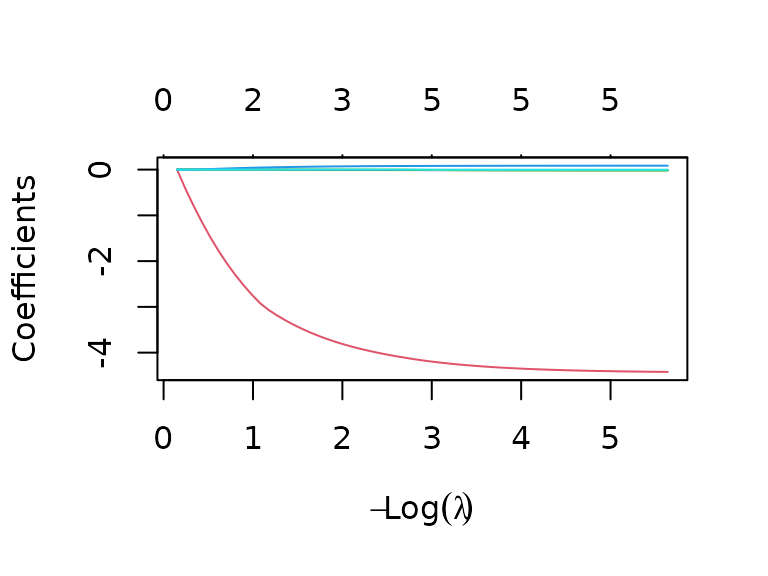
plot(cv_glm_reduced)We now get a model with 5 (or 3) parameters for minimum (or 1se) lambda, i.e. the minimum MSE lambda will use all available predictors (distance, inclination, temperature, average heart rate, and days since last training), whereas the 1se lambda will ignore the temperature and days since last training effects:
coef(fit_glm_reduced, cv_glm_reduced$lambda.min)
#> 6 x 1 sparse Matrix of class "dgCMatrix"
#> s1
#> (Intercept) 21.388765335
#> distance_km -0.011019946
#> avg_inclination -4.244095168
#> temperature_c -0.010307268
#> avg_hr_bpm 0.081755859
#> days_since_previous_training -0.001526533
coef(fit_glm_reduced, cv_glm_reduced$lambda.1se)
#> 6 x 1 sparse Matrix of class "dgCMatrix"
#> s1
#> (Intercept) 22.62977386
#> distance_km -0.00551085
#> avg_inclination -3.63267457
#> temperature_c .
#> avg_hr_bpm 0.06552551
#> days_since_previous_training .Random Effects Models
Since fitness levels could fluctuate between years (different loss of fitness during the winter, increasing age, and other influences), adding random effects might be another thing to try. As a baseline, a linear model with fixed effects for distance, inclination, and heart rate was chosen, which seems the most appropriate after what we’ve seen in the previous sections. The first idea was to use a random effect for the year, and maybe a nested random effect for months. After the tracks were labelled (see “Clustering” and “Route-specific Linear Models” sections), models with a random effect for the route and a 2-level model with a random effect for years and a nested effect for route were also tried:
tracks_year_month <- corrected_tracks |>
left_join(track_classes, join_by(date)) |>
mutate(
year = year(date),
month = month(date)) |>
filter(!is.na(track))
fit_baseline <- gls(speed_km_h ~ distance_km + avg_inclination + avg_hr_bpm, data = tracks_year_month)
fit_random_year <- lme(
fixed = speed_km_h ~ distance_km + avg_inclination + avg_hr_bpm,
random = ~ 1 | year,
data = tracks_year_month)
fit_random_year_month <- lme(
fixed = speed_km_h ~ distance_km + avg_inclination + avg_hr_bpm,
random = ~ 1 | year/month,
data = tracks_year_month)
fit_random_track <- lme(
fixed = speed_km_h ~ distance_km + avg_inclination + avg_hr_bpm,
random = ~ 1 | track,
data = tracks_year_month)
fit_random_year_track <- lme(
fixed = speed_km_h ~ distance_km + avg_inclination + avg_hr_bpm,
random = ~ 1 | year/track,
data = tracks_year_month)
anova(fit_baseline, fit_random_year, fit_random_year_month)
#> Model df AIC BIC logLik Test L.Ratio
#> fit_baseline 1 5 384.7310 399.6147 -187.3655
#> fit_random_year 2 6 358.1971 376.0575 -173.0985 1 vs 2 28.533958
#> fit_random_year_month 3 7 352.7764 373.6135 -169.3882 2 vs 3 7.420717
#> p-value
#> fit_baseline
#> fit_random_year <.0001
#> fit_random_year_month 0.0064
anova(fit_baseline, fit_random_year, fit_random_year_track)
#> Model df AIC BIC logLik Test L.Ratio
#> fit_baseline 1 5 384.7310 399.6147 -187.3655
#> fit_random_year 2 6 358.1971 376.0575 -173.0985 1 vs 2 28.533958
#> fit_random_year_track 3 7 352.7737 373.6109 -169.3869 2 vs 3 7.423347
#> p-value
#> fit_baseline
#> fit_random_year <.0001
#> fit_random_year_track 0.0064
anova(fit_baseline, fit_random_track)
#> Model df AIC BIC logLik Test L.Ratio p-value
#> fit_baseline 1 5 384.7310 399.6147 -187.3655
#> fit_random_track 2 6 384.5631 402.4235 -186.2816 1 vs 2 2.16791 0.1409Comparing the models, we see that adding a random effect for the
route (fit_random_track) is not better than the fixed
baseline model alone. However, adding a random effect for the year
results in a better model, with the multi-level models with nested
effects for month or track being even better.
However, the random effects are rather small, for example, in the nested year/month model, the standard deviations for the random year and month effects are less than 0.6 and 0.3, respectively, with a standard deviation of the residual errors of almost 0.7:
summary(fit_random_year_month)
#> Linear mixed-effects model fit by REML
#> Data: tracks_year_month
#> AIC BIC logLik
#> 352.7764 373.6135 -169.3882
#>
#> Random effects:
#> Formula: ~1 | year
#> (Intercept)
#> StdDev: 0.6237785
#>
#> Formula: ~1 | month %in% year
#> (Intercept) Residual
#> StdDev: 0.3546791 0.6572115
#>
#> Fixed effects: speed_km_h ~ distance_km + avg_inclination + avg_hr_bpm
#> Value Std.Error DF t-value p-value
#> (Intercept) 24.0425 1.60039 117 15.022919 0.0000
#> distance_km -0.0137 0.00421 117 -3.265322 0.0014
#> avg_inclination -422.7348 40.81293 117 -10.357865 0.0000
#> avg_hr_bpm 0.0605 0.01074 117 5.627163 0.0000
#> Correlation:
#> (Intr) dstnc_ avg_nc
#> distance_km 0.074
#> avg_inclination -0.166 -0.391
#> avg_hr_bpm -0.950 -0.062 -0.082
#>
#> Standardized Within-Group Residuals:
#> Min Q1 Med Q3 Max
#> -2.4187433 -0.6322553 -0.0592517 0.5322350 3.1249577
#>
#> Number of Observations: 149
#> Number of Groups:
#> year month %in% year
#> 6 29Note that only the most basic random effects were tried so far (i.e. random intercepts), what could also be worth investigating is adding random slopes, e.g. fitting a model that has a random effect for the average heart rate, depending on the year. This has so far not been explored further, due to time constraints.
PCA
To get an impression of which variables are important, we can do a principal component analysis:
numerical_track_components_pca <- corrected_tracks |>
mutate(weekday = as.numeric(weekday)) |>
select(!date & !previous_training_date & !samples)
pca <- prcomp(~ ., data = numerical_track_components_pca, scale = TRUE)
pca |>
tidy("pcs") |>
ggplot(aes(x = PC, y = percent)) +
geom_col() +
labs(x = "PC", y = "Explained Variance")As can be seen from the scree plot, the first two principal components explain almost 60% of the total variance in the data, with the next five principal components still explaining between 5 and 10 percent each, and each of the last six components explaining less than 5% of the total variance.
Looking at some bi-plots for some combinations of the first seven components, we can get a feeling for what the components mean:
biplot(pca, choices = 1:2, scale = 0)
biplot(pca, choices = 2:3, scale = 0)
biplot(pca, choices = 3:4, scale = 0)
biplot(pca, choices = 4:5, scale = 0)
biplot(pca, choices = 5:6, scale = 0)
biplot(pca, choices = 6:7, scale = 0)The two most important components seem to correspond mostly to distance/altitude/inclination-related variables (PC1), and to heart rate-related variables (PC2), which is not really surprising, seeing how these are also the relevant predictors seen e.g. in the linear models.
What is striking, though, is the relatively clean grouping of data points in the bi-plot of the first two components, which warrants further investigation.
Clustering
After the clusters observed in the PCA biplot, the next question is if clustering reveals anything interesting.
First, some data preparation: for clustering, we need numeric data,
without NA values, and variables should be on the same
scale.
scaled_tracks <- corrected_tracks |>
mutate(weekday = as.numeric(weekday)) |>
select(!date & !previous_training_date & !samples) |>
scale() |>
as_tibble() |>
na.omit()The first approach then is a Gaussian mixture model:
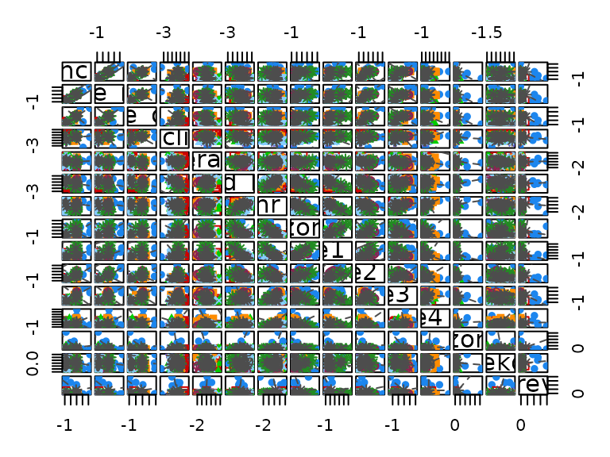
Since the plot matrix is somewhat hard to read, let’s plot track distance vs speed, colored by clusters:
scaled_tracks |>
mutate(cluster = factor(clusters_gaussian_mix$classification)) |>
ggplot(aes(x = distance_km, y = speed_km_h, color = cluster)) +
geom_point() +
labs(x = "Standardized Distance", y = "Standardized Speed", color = "Cluster") +
ggtitle("Gaussian Mixture Model Clustering")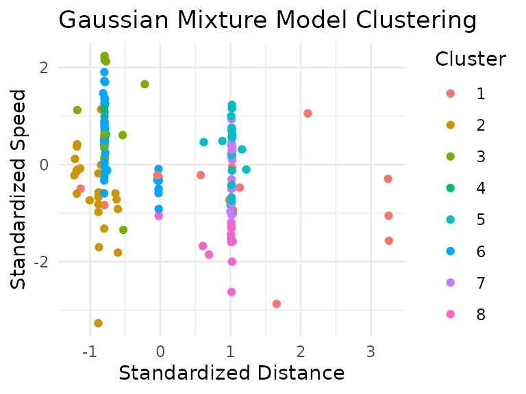
It appears the Gaussian mixture model seems to have clustered the data primarily by track length.
Maybe a different clustering algorithm finds some other classes?
Let’s try density-based spatial clustering. To find good clustering
parameters, we start with a low minPts value, and try out
some values for eps that seem promising from the
k-nearest-neighbor-distance-plot:
kNNdistplot(scaled_tracks, k = 1)
abline(h = 2.1, col = "red")
abline(h = 0.5, col = "blue",lty = 2)
abline(h = 2.55, col = "blue",lty = 2)
abline(h = 3.25, col = "blue",lty = 2)
abline(h = 4.1, col = "blue",lty = 2)k = 1 corresponds to a minPts value of 2,
and the values for the ablines in the plot were tried out.
The red line (corresponding to a
,
i.e. an eps value, of 2.1) results in three clusters (and a
fourth group for “noise” data points):
clusters_db <- dbscan(scaled_tracks, eps = 2.1, minPts = 2)
scaled_tracks |>
mutate(cluster = factor(clusters_db$cluster)) |>
ggplot(aes(x = distance_km, y = speed_km_h, color = cluster)) +
geom_point() +
labs(x = "Standardized Distance", y = "Standardized Speed", color = "Cluster") +
ggtitle("Density-Based Spatial Clustering")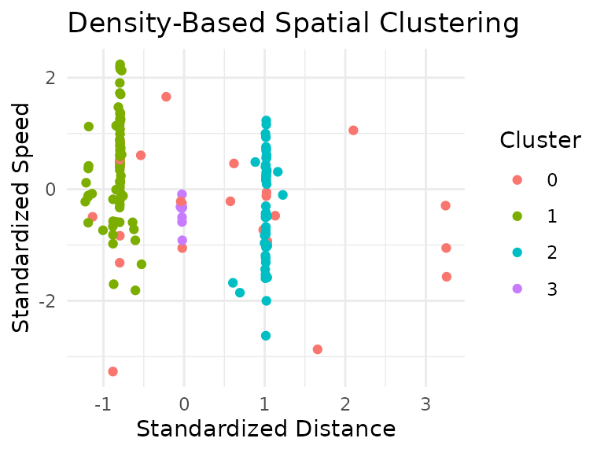
Higher density values (i.e. higher values for the eps
parameter, and higher values for k in the k-NN plot) need
different eps values, however, during experimenting with
different k (and thus minPts) values, as well
as different eps values has only resulted in fewer
clusters, most of the time only one “real” and one noise cluster. Even
with the three clusters above, we see again a classification that seems
to be mostly based on track distance.
Route-specific Linear Models
After the results of the clustering attempts (and some discussions during the intermediate presentation), the tracks were manually classified, based on the route driven, and (for one particular route) also the direction in which the route was driven (all other routes were only ever driven in one direction).
This should result in much better comparability for tracks from the same group, since differences among routes (that cannot easily be gleaned from the data) can be eliminated by just comparing tracks using the same route.
With that, let’s try fitting a linear model again, but this time a route-specific one. We’ll arbitrarily pick tracks 1, 2, and 4 (about 25, 40, and 60 kilometers, respectively) for modelling.
To get a better sense for the chosen tracks: the chosen tracks are the purple, blue, and green tracks on the following map:
track_linestrings |>
left_join(track_classes, join_by(date)) |>
filter(!is.na(track)) |>
ggplot() +
geom_sf(aes(color = track)) +
scale_color_viridis_c(option = "turbo")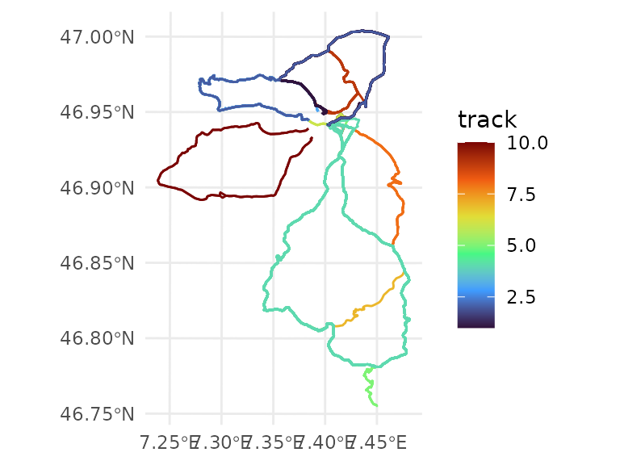
Selecting the tracks:
labeled_tracks <- corrected_tracks |>
left_join(track_classes, join_by(date))
tracks_1 <- labeled_tracks |>
filter(track == 1)
tracks_2 <- labeled_tracks |>
filter(track == 2)
tracks_4 <- labeled_tracks |>
filter(track == 4)Since the route is now always the same for tracks of the same group, the distance and inclination is always the same, and therefore won’t be able to predict variations in speed. Thus, let’s try a model using heart rate and temperature:
fit_track_1 <- lm(speed_km_h ~ avg_hr_bpm + temperature_c, data = tracks_1)
summary(fit_track_1)
#>
#> Call:
#> lm(formula = speed_km_h ~ avg_hr_bpm + temperature_c, data = tracks_1)
#>
#> Residuals:
#> Min 1Q Median 3Q Max
#> -1.13855 -0.51188 -0.06761 0.34820 2.29499
#>
#> Coefficients:
#> Estimate Std. Error t value Pr(>|t|)
#> (Intercept) 18.71064 1.71732 10.895 4.95e-15 ***
#> avg_hr_bpm 0.06522 0.01192 5.473 1.29e-06 ***
#> temperature_c 0.03112 0.03086 1.008 0.318
#> ---
#> Signif. codes: 0 '***' 0.001 '**' 0.01 '*' 0.05 '.' 0.1 ' ' 1
#>
#> Residual standard error: 0.721 on 52 degrees of freedom
#> Multiple R-squared: 0.4011, Adjusted R-squared: 0.3781
#> F-statistic: 17.41 on 2 and 52 DF, p-value: 1.627e-06
plot(fit_track_1)
fit_track_2 <- lm(speed_km_h ~ avg_hr_bpm + temperature_c, data = tracks_2)
summary(fit_track_2)
#>
#> Call:
#> lm(formula = speed_km_h ~ avg_hr_bpm + temperature_c, data = tracks_2)
#>
#> Residuals:
#> Min 1Q Median 3Q Max
#> -0.31001 -0.06857 0.05155 0.12025 0.24216
#>
#> Coefficients:
#> Estimate Std. Error t value Pr(>|t|)
#> (Intercept) 17.06636 2.02651 8.422 6.56e-05 ***
#> avg_hr_bpm 0.07855 0.01511 5.198 0.00126 **
#> temperature_c -0.03064 0.02948 -1.039 0.33326
#> ---
#> Signif. codes: 0 '***' 0.001 '**' 0.01 '*' 0.05 '.' 0.1 ' ' 1
#>
#> Residual standard error: 0.2064 on 7 degrees of freedom
#> Multiple R-squared: 0.7946, Adjusted R-squared: 0.7359
#> F-statistic: 13.54 on 2 and 7 DF, p-value: 0.003928
plot(fit_track_2) 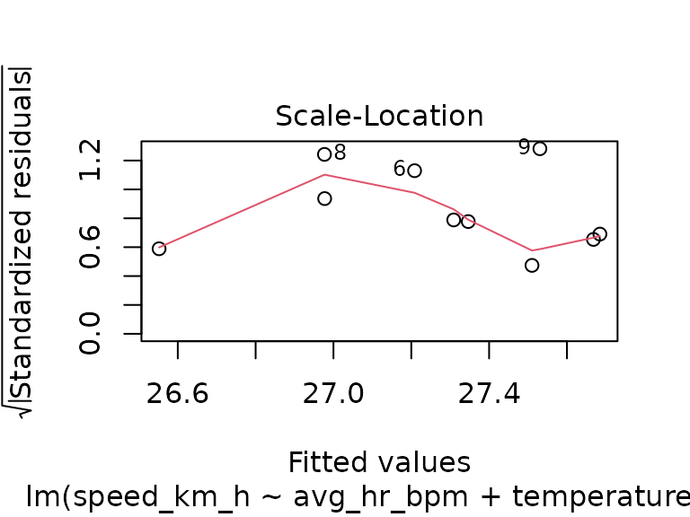
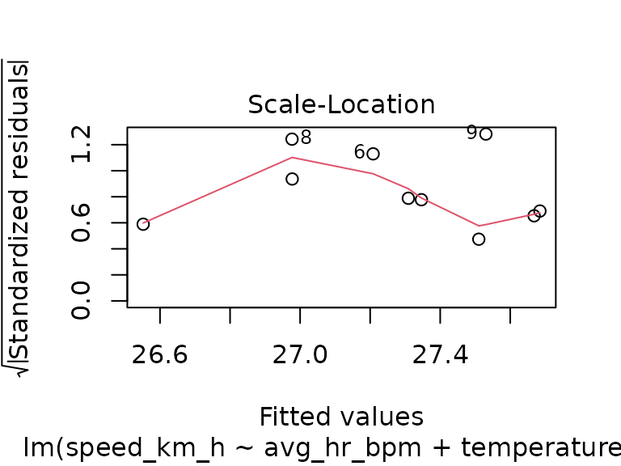
fit_track_4 <- lm(speed_km_h ~ avg_hr_bpm + temperature_c, data = tracks_4)
summary(fit_track_4)
#>
#> Call:
#> lm(formula = speed_km_h ~ avg_hr_bpm + temperature_c, data = tracks_4)
#>
#> Residuals:
#> Min 1Q Median 3Q Max
#> -2.4289 -0.4170 0.1001 0.6196 1.4331
#>
#> Coefficients:
#> Estimate Std. Error t value Pr(>|t|)
#> (Intercept) 11.65598 2.63503 4.423 5.40e-05 ***
#> avg_hr_bpm 0.10733 0.01654 6.489 4.11e-08 ***
#> temperature_c 0.00604 0.03664 0.165 0.87
#> ---
#> Signif. codes: 0 '***' 0.001 '**' 0.01 '*' 0.05 '.' 0.1 ' ' 1
#>
#> Residual standard error: 0.8631 on 49 degrees of freedom
#> Multiple R-squared: 0.4682, Adjusted R-squared: 0.4465
#> F-statistic: 21.57 on 2 and 49 DF, p-value: 1.908e-07
plot(fit_track_4)For all of the three routes, we see that the temperature has no significant effect. Again, we could try to find a training effect during the course of the season, however, for the selected tracks we now have fewer data points per route: only 10 tracks in group 2, and while tracks in groups 1 and 4 have 55 and 52 observations, the observations for group 4 are almost all in the later part of the season, which is not great for modeling:
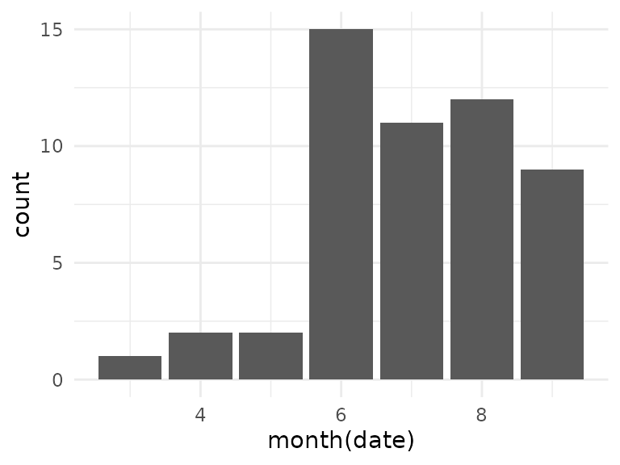
The class 1 tracks only have 3 observations in October, but overall the number of available data points for this group looks better, so let’s try to create a model for this group:
tracks_1_speed_month <- tracks_1 |>
mutate(month = as.factor(month(date))) |>
select(speed_km_h, month)
fit_tracks_1_month <- lm(speed_km_h ~ month, data = tracks_1_speed_month)
summary(fit_tracks_1_month)
#>
#> Call:
#> lm(formula = speed_km_h ~ month, data = tracks_1_speed_month)
#>
#> Residuals:
#> Min 1Q Median 3Q Max
#> -1.56163 -0.49759 -0.05842 0.58971 1.77622
#>
#> Coefficients:
#> Estimate Std. Error t value Pr(>|t|)
#> (Intercept) 28.98822 0.28323 102.348 <2e-16 ***
#> month5 0.01964 0.36845 0.053 0.958
#> month6 -0.90112 0.41288 -2.183 0.034 *
#> month7 -0.02002 0.47394 -0.042 0.966
#> month8 0.49069 0.41288 1.188 0.240
#> month9 -0.32493 0.40055 -0.811 0.421
#> month10 -0.91418 0.56646 -1.614 0.113
#> ---
#> Signif. codes: 0 '***' 0.001 '**' 0.01 '*' 0.05 '.' 0.1 ' ' 1
#>
#> Residual standard error: 0.8497 on 48 degrees of freedom
#> Multiple R-squared: 0.2322, Adjusted R-squared: 0.1362
#> F-statistic: 2.419 on 6 and 48 DF, p-value: 0.04008
plot(fit_tracks_1_month)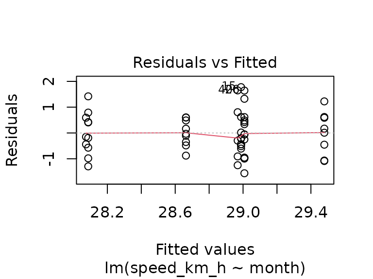
Again, no significant effect can be found. Considering that the model using heart rate and temperature explained only 40% of the variance, and without an obvious training effect over the course of the season, there are probably factors influencing the average speed that are not available in the data. This could be environmental factors (e.g. wind), or fitness-related factors (e.g. influences of other trainings that were not recorded). In any case, the available data seems insufficient to accurately predict the average speed for a track, with the only somewhat certain statement seeming “higher average heart rate (i.e. higher training effort) correlates with higher average speed”, which seems logical, even without looking at the data.
Dynamic Time Warping
Another technique suggested during the discussion after the mid-term presentation is dynamic time warping. Tracks along the same route could be time-warped, and the resulting mappings could then be analyzed to find parts of the route that have low or high variation among tracks.
Due to time constraints, this is not finished yet, it is still very much work in progress.
tracks_1_fastest <- tracks_1 |> slice_min(time_min) |> pull(date)
tracks_1_slowest <- tracks_1 |> slice_max(time_min) |> pull(date)
t1f <- track_details |>
filter(date == tracks_1_fastest) |>
select(latitude, longitude)
t1s <- track_details |>
filter(date == tracks_1_slowest) |>
select(latitude, longitude)
a <- dtw(t1s, t1f, keep = TRUE)
plot(a, type = "alignment")
plot(a, type = "density")
#plot(a, type = "two", offset = -200)
tracks_2_fastest <- tracks_2 |> slice_min(time_min) |> pull(date)
tracks_2_slowest <- tracks_2 |> slice_max(time_min) |> pull(date)
t2f <- track_details |>
filter(date == tracks_2_fastest) |>
select(latitude, longitude)
t2s <- track_details |>
filter(date == tracks_2_slowest) |>
select(latitude, longitude)
b <- dtw(t2s, t2f, keep = TRUE)
plot(b, type = "alignment")
plot(b, type = "density")
#plot(a, type = "two", offset = -200)
tracks_4_fastest <- tracks_4 |> slice_min(time_min) |> pull(date)
tracks_4_slowest <- tracks_4 |> slice_max(time_min) |> pull(date)
t4f <- track_details |>
filter(date == tracks_4_fastest) |>
select(latitude, longitude)
t4s <- track_details |>
filter(date == tracks_4_slowest) |>
select(latitude, longitude)
c <- dtw(t4s, t4f, keep = TRUE)
plot(c, type = "alignment")
plot(c, type = "density")
#plot(a, type = "two", offset = -200)